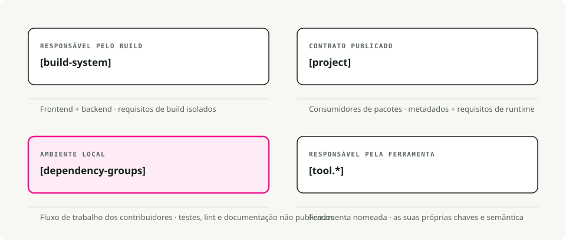
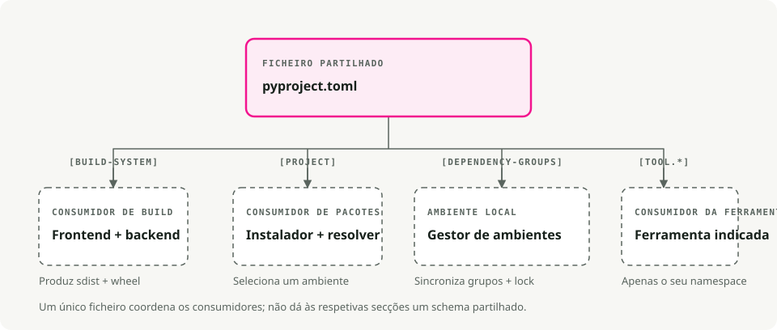
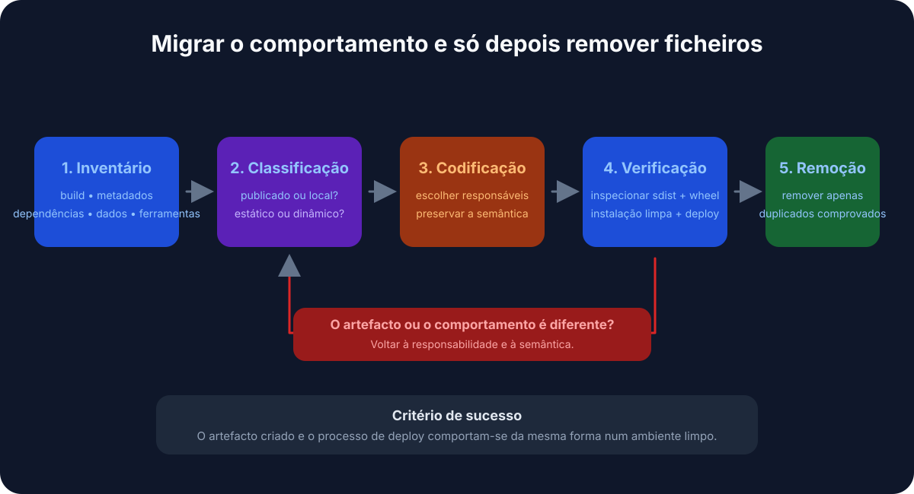

Tradução automática
Este artigo foi traduzido automaticamente a partir da versão original em inglês.
pyproject.toml Guia: Empacotamento em Python, Dependências e Configuração de Ferramentas
Se já abriu um projeto em Python e tentou descobrir onde se encontram efetivamente as dependências, as definições de compilação e as configurações das ferramentas, conhece bem esse problema. setup.py, setup.cfg, requirements.txt, MANIFEST.in, além de alguns ficheiros .dotfile para cada ferramenta de linting e formatação — todos a ler de locais diferentes.
pyproject.toml consolida a maior parte disso num único ficheiro.
TL;DR
pyproject.toml é aproximadamente o package.json para Python. Um ficheiro contém a metadados do projeto, as dependências e as definições de ferramenta. Independentemente de estar a utilizar .venv, pyenv, ou uv, ao colocar tudo aqui, a configuração e a colaboração tornam-se mais fáceis.
O que é pyproject.tomlÉ um ficheiro de configuração localizado na raiz do seu projeto Python, escrito em TOML (pense em ficheiros INI, mas com uma especificação formal). Dois PEPs definiram a sua funcionalidade atual: PEP 518 (2016) introduziu o [build-system] uma tabela para que as ferramentas de construção possam declarar as suas exigências de forma padrão. PEP 621 (2020) adicionou o [project] tabela com os metadados do pacote principal: nome, versão, dependências, coisas desse tipo.
Atualmente, a maioria das ferramentas em Python (Black, isort, pytest, Ruff, mypy) lê a sua configuração a partir de [tool.*] seções neste ficheiro.

Por que é importante
Menos ficheiros para monitorizar
Um projeto legado típico tinha de gerir simultaneamente setup.py, setup.cfg, requirements.txt, MANIFEST.in, e um conjunto de ficheiros dotfile (.flake8, .coveragerc, e similares). A maioria delas converge num único local.
Compilações agnósticas ao backend
Quando executa pip install ., o pip lê pyproject.toml e instala as ferramentas de compilação de que o seu projeto precisa: setuptools, flit, hatchling – escolha a que preferir. Já não está limitado ao setuptools.
Um único local para configuração de ferramentas
Os linters, formatters, executores de testes e verificadores de tipo sabem procurar aqui. O seu IDE, o seu pipeline CI e os seus colegas de equipa acedem ao mesmo ficheiro.

Anatomia de um pyproject.toml
Um ficheiro típico possui três secções principais:
# 1. Build system - tells pip/build how to package your project
[build-system]
requires = ["hatchling"]
build-backend = "hatchling.build"
# 2. Project metadata and dependencies
[project]
name = "awesome-app"
version = "0.1.0"
description = "Short demo of pyproject.toml"
readme = "README.md"
requires-python = ">=3.12"
dependencies = [
"fastapi>=0.111",
"uvicorn[standard]>=0.30",
]
# Expose CLI commands
[project.scripts]
awesome-cli = "awesome_app.cli:main"
# Optional dependencies (e.g., for development)
[project.optional-dependencies]
dev = ["pytest", "ruff", "mypy"]
# 3. Tool configuration
[tool.ruff]
line-length = 100
target-version = "py312"
[tool.pytest.ini_options]
addopts = "-ra -q"
testpaths = ["tests"]
Análise detalhada [build-system]
Necessário se quiser empacotar ou distribuir o seu projeto. Indica ao pip e às ferramentas de compilação (como python -m build) qual backend utilizar. [project]
Metadados do seu pacote. É aqui que as dependências são armazenadas em vez de requirements.txt.
dependencies: os requisitos de execução para o seu pacote.optional-dependencies: grupos de dependências adicionais (dev,test,docs).scripts: cria comandos executáveis. No exemplo acima, a instalação do pacote fornece-lhe umawesome-clicomando que executa omainfunção emawesome_app/cli.py.
[tool.*]
Configuração para qualquer ferramenta que a suporte. Cada ferramenta possui o seu próprio namespace: [tool.pytest.ini_options], [tool.mypy], [tool.ruff], e o resto.
Será que substitui requirements.txt?
Para fluxos de trabalho modernos, sim. Ferramentas como Poesia, PDM, Hatcheamento, e UV armazenar as dependências diretamente no [project] seção e gerar ficheiros de bloqueio para reprodutibilidade.
Provavelmente ainda deseja requirements.txt if:
- Estiver a trabalhar com um sistema de deploy legado que o exige.
- Tiver um script de CI que ainda não foi atualizado.
A maioria das ferramentas modernas consegue exportar um dos seus pyproject.toml quando necessário:
uv export > requirements.txt
Escolha de um backend de compilação
O backend de compilação é uma das decisões mais complexas. Eis uma comparação rápida:
| Backend | Melhor para | Vantagens | Cons |
|---|---|---|---|
| Filhote | Padrão moderno | Rápido, extensível e com suporte a plugins | Suporte mais recente e com menor cobertura de versões legadas |
| Flit | Pacotes simples | Extremamente simples, sem necessidade de configuração alguma | Não adequado para compilações complexas (extensões C) |
| Setuptools | Legado, complexo | Suporta tudo (extensões C, etc.) | Mais lento, com mais configuração |
| Poesia | Utilizadores de Poetry | Integrado com o ecossistema da Poetry | Travado no fluxo de trabalho Poetry |
Para novos projetos em Python puro, o Hatchling é uma escolha razoável por padrão. É isso mesmo. uv init escreve por si.
Migrar um projeto existente
Se possui um projeto Python legado, saiba aqui como modernizá-lo:

- Adicionar
[build-system]. Se não tiver a certeza de qual backend utilizar, comece comrequires = ["setuptools>=61", "wheel"]2. Mova os metadados para[project]. Transferir o nome, a versão e as dependências desetup.pyousetup.cfg3. Convertir as dependências de desenvolvimento. Colocá‑las em[project.optional-dependencies].dev. - Configure as ferramentas. Adicione
[tool.*]Seções para Black, pytest, mypy, etc. - Decida o que fazer com
requirements.txt. Ou elimine-o, ou gere-o a partir do seu ficheiro de bloqueio para os sistemas legados que o necessitam.
Após a migração, geralmente pode eliminá-lo. setup.py, setup.cfg, e a maioria desses ficheiros de configuração em formato .dotfile.
Algumas funcionalidades úteis
Pontos de entrada da CLI
Em vez do antigo console_scripts bloqueio em setup.py, utilize [project.scripts]:
[project.scripts]
my-tool = "my_package.main:run"
Quando alguém instala o seu pacote, pode digitar my-tool no seu terminal.
Workspaces (monorepos)
Ferramentas como uv e hatch suporte a workspaces, que permitem gerir vários pacotes num único repositório:
[tool.uv.workspace]
members = ["packages/*"]
Pode desenvolver vários pacotes interdependentes e instalá-los todos num único ambiente virtual para testes. uv
Iniciar um novo projeto
uv init my_app # creates folder with pyproject.toml and .venv
cd my_app
uv add requests fastapi # adds to [project.dependencies] and installs
uv run pytest # runs tests in the venv
Execução de scripts
Podem definir scripts quer diretamente pyproject.toml (utilizando um executor de tarefas como poe ou hatch) ou simplesmente chame uv run:
uv run python main.py
Dicas práticas
- Não fixe versões exatas nas bibliotecas. Utilize intervalos como
requests>=2.30Assim, a sua biblioteca não entra em conflito com qualquer outro componente instalado no ambiente de alguém. - Defina versões fixas nas aplicações. Utilize um ficheiro de bloqueio (lockfile).
uv.lock,poetry.lock) para compilações reprodutíveis. - Agrupe as dependências de desenvolvimento. Mantenha as dependências de teste, validação de código e documentação em grupos opcionais separados.
dev,test,docs). - Não inclua todas as opções.
pyproject.toml. Mantenha-se fiel aos valores padrão em todo o projeto e deixe que os ficheiros de configuração específicos da ferramenta cuidem do resto caso a situação se torne complexa.
A verdadeira vantagem disso é pyproject.toml Trata-se, essencialmente, de eliminar pequenos obstáculos diários. Deixa de ser necessário procurar qual ficheiro é responsável pela compilação. A configuração do linter encontra-se ao lado das dependências. O Pip e o seu IDE concordam finalmente sobre o que está instalado. Escolha um backend de compilação e coloque as suas dependências nele. [project], e permita que as suas ferramentas leiam de um único local. Se estiver a começar do zero, uv init leva-o quase até lá com um único comando.
Principais Conclusões
pyproject.tomlé o ficheiro de configuração central para projetos Python modernos.- O PEP 518 define os requisitos do sistema de compilação; o PEP 621 define a metadados do projeto.
- Mantenha a configuração das ferramentas em
pyproject.tomlquando a ferramenta o suporta, mas não force configurações não relacionadas num único ficheiro. - Os ficheiros de bloqueio e a metadados de compilação resolvem problemas diferentes: instalações reprodutíveis versus identidade do pacote.
Referências
- PEP 518 - requisitos do sistema de compilação em
pyproject.toml. - PEP 621 - Metadados do projeto. Guia do Utilizador para Empacotamento em Python: pyproject.toml - configuração prática de projetos. Documentação do projeto UV -
pyproject.tomlcom UV.